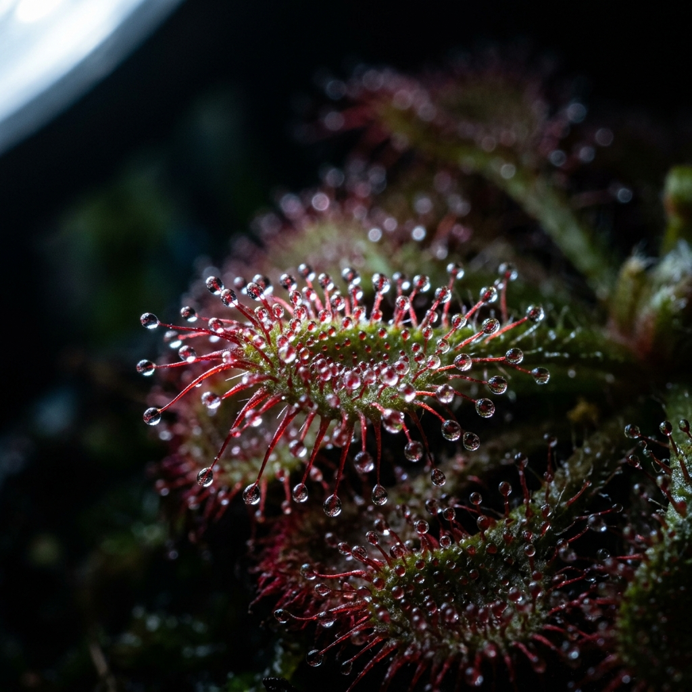
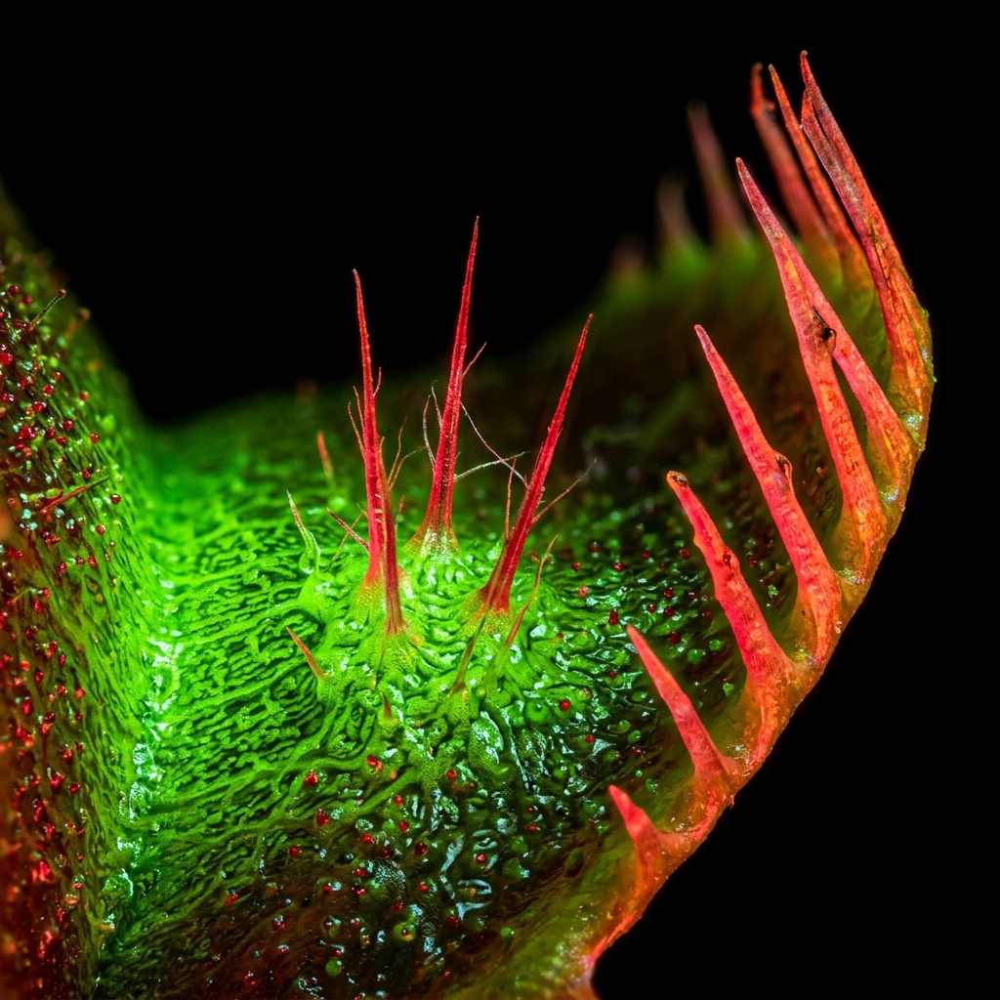
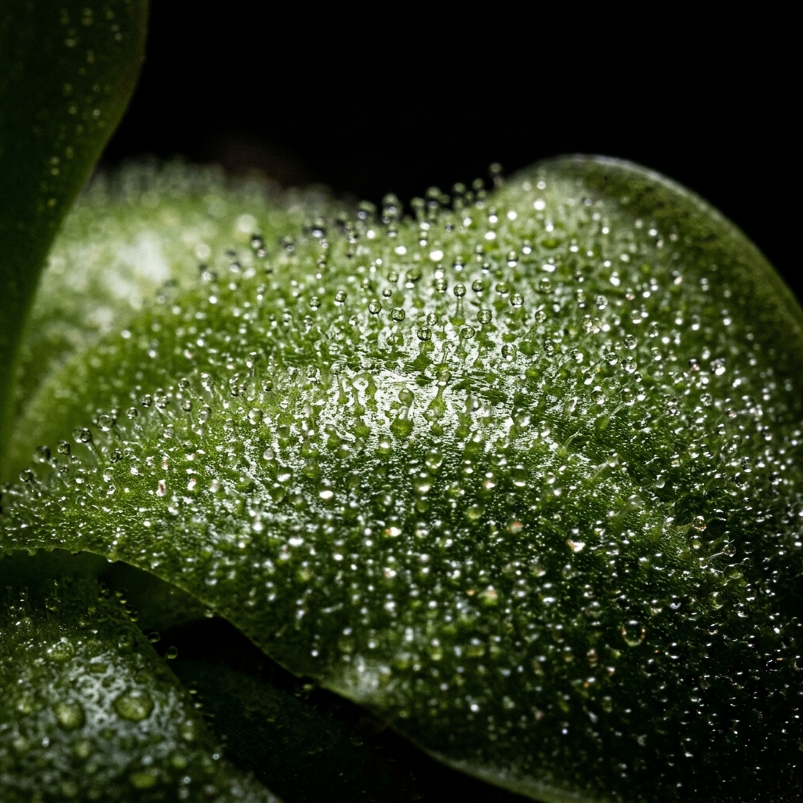

Rare. Verified. Lethal.
We are dedicated to preserving and propagating the world's most aggressive and anatomically complex flora. Access time-locked, highly limited drops of endemic South African Drosera, extremely temperamental Roridula, and specialised Mexican Pinguicula. Our inventory is entirely tissue-cultured and lab-grown to ensure strict compliance with international botanical law. Once a specific genetic line is sold out from our heavily regulated cold storage, it will absolutely not return to the public vault for a minimum of twelve months.
Access Live Drop
The Procurement Manifesto
The global trade in rare carnivorous plants is plagued by devastating field poaching and the rampant circulation of unstable, diseased genetics. In response, the Drosera Vault was established as a secure, sterile sanctuary for extreme botanical isolation. We do not participate in mass horticulture; our focus is brutally narrow. We acquire legally sourced, highly documented seed stock from international botanical gardens and subject them to rigorous, multi-generational tissue culture processes within our Cape Town laboratory.
Every single seed vial or live tissue culture flask released through our portal is accompanied by a cryptographic certificate of genetic authenticity, detailing its exact geographical lineage, parentage, and the specific agar medium used during its early cellular development. We strictly limit our drops to a maximum of fifty units per species to guarantee our botanists can maintain absolute quality control over the germination viability of the material. This is uncompromising conservation engineered for the serious botanical collector.

Dionaea m. "Obsidian Teeth"
LiveA highly unstable, incredibly dark-pigmented mutation isolated in late 2024. This specific cultivar produces excessively elongated, needle-like marginal spines and develops a solid black interior trap under intense ultraviolet lighting. The genetic lineage is highly prone to spontaneous sectoring, making each seed an absolute wildcard. Only fifty seed vials are available for this specific procurement window.

Pinguicula "Titan's Mirror"
LockedA giant Mexican hybrid engineered by crossing P. gigantea with a highly specific, high-altitude P. moranensis variant. The resulting rosette features excessively large glandular surfaces and an abnormally high mucilage production rate, creating a mirrored, reflective effect under direct sunlight. This strain is notoriously difficult to deflask and requires extreme humidity control during the critical first thirty days.
Acquisition Protocol
1. The Broadcast
Exactly seventy-two hours prior to a new genetic release, an encrypted botanical ledger is sent exclusively to registered vault members. This document details the exact agar formulations, expected germination rates, and the required micro-climate parameters for the upcoming drop.
2. The Procurement
When the vault timer reaches zero, the allocation becomes instantly available to the public network. Due to our strict fifty-unit ceiling, highly sought-after mutations (such as our anthocyanin-free Roridula lines) typically sell out within the first fourteen minutes of the release.
3. Secure Transport
Seeds are hermetically sealed within sterile eppendorf tubes, suspended in an anti-fungal desiccant powder to completely eliminate the risk of premature germination or mould contamination during international transit. Full CITES documentation is physically attached to the exterior of every parcel.
Verified Cultivator Records
"The germination viability of the Drosera capensis 'Giant' seeds I secured during the November drop was absolutely staggering. Within fourteen days on a strict peat-perlite matrix under T5 lighting, I recorded a ninety-four percent strike rate. The genetic vigour is unlike anything I have sourced from domestic European nurseries."
"Drosera Vault is doing critical conservation work. Their CITES documentation is flawless, which makes importing their rare South African endemics into the United Kingdom completely frictionless. The Roridula gorgonias tissue culture arrived in pristine, sterile condition despite seven days in transit."